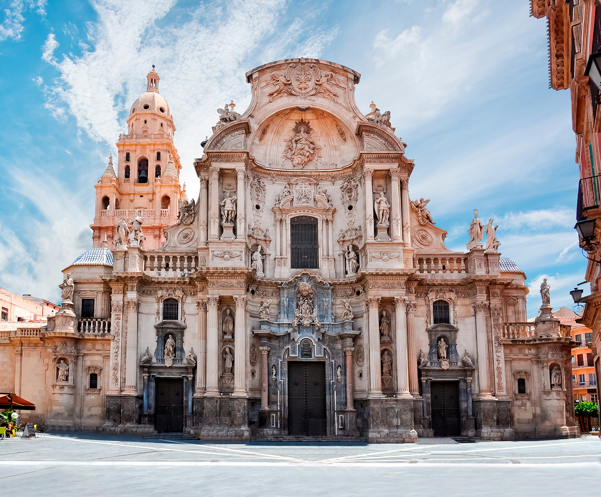

... Etudiante en école de commerce à Nantes, je suis actuellement en troisième et dernière année de Bachelor. Dans le cadre de ma formation, j'ai l'opportunité de réaliser un séminaire "Culture numérique", qui nous permet de comprendre les dernières techniques de conception web. C'est donc avec grand plaisir que je vous fait part de mon site en ligne codé. Pour plus d'informations concernant mon école de commerce, je vous invite à visiter le lien ci-dessous 👇🏻.
Découvrez mon école de commerceL'Espagne est le pays dans lequel j'ai grandi. J'ai vécu pendant 15 ans dans la ville de Murcie (dans le sud). En 2018, j'ai décidé de partir vivre en France, à Nantes, afin d'y réaliser mes études.
Ayant vécu dans 4 pays differents, j'adore découvrir de nouvelles cultures. Parlant 4 langues, j'adore échanger avec les autres et apprendre de nouvelles coutumes.
Je pratique l'équitation depuis mes 10 ans. J'ai commencé dans un club (en Espagne) qui possède une ambiance très familliale et chaleureuse.
Je suis actuellement en recherche de stage pour clôturer cette troisième année. Ce stage commencera en Janvier 2021, et je l'espère à l'étranger 🔍. Après le Bachelor à Audencia, je souhaite réaliser un Master dans une grande école de commerce 👩🏼🎓.